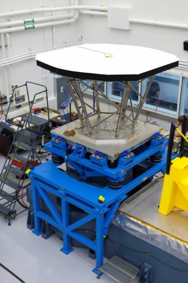

The heat shield, as the name implies, is the part responsible for protecting the Parker Solar Probe and its instruments against the intense beat and energy, and hypervelocity dust particles of the corona through which the spacecraft will fly.
It consists of a layer of Ultramet’s carbon from sandwiched between two layers of a carbon composite, in addition to an outer coating.
While the probe orbits the sun, the front of the shield is expected to reach 2500 degrees Fahrenheit, its back side will be a comparatively frosty 600 degrees Fahrenheit.
